Instructor team: Thomas Van de Velde · Alexander Beattie · Patrice Pinardo
Learning outcomes
By the end of this course, you will be able to:
01
Hands-on making
Harness technology through hands-on making — no fear, and no prior physical making or coding knowledge required.
02
Maker tools proficiency
Develop confidence in concept drawing, hand modeling, 3D printing, laser cutting, electronics, and connected devices.
03
Team collaboration
Know how to collaborate in multidisciplinary teams to design and build working prototypes.
04
Entrepreneurial mindset
Apply the “build–measure–learn” loop through failing fast and doing rapid iterations.
Discussion
In class, everyone answers one of these. There are no wrong answers.
01
Why are you taking this class?
02
Tell us about something you made that you're proud of.
03
What would you like to make in this class?
Who should take this class?
If you see yourself here, you belong.
Aspiring entrepreneurs
Students looking to launch or work in early-stage tech ventures who want to build proof of concepts to vet ideas with customers.
Future inventors
Those interested in exploring ideas, understanding how things work under the covers, and experimenting with new technologies.
Hands-on team players
Individuals eager to collaborate in cross-functional teams and build real prototypes to test ideas rapidly.
Problem solvers & innovators
Students drawn to building tangible products to prove early concepts and gain traction for their ideas.
What you'll make
From idea to working prototype — laser cutting, 3D printing, electronics, and robots.
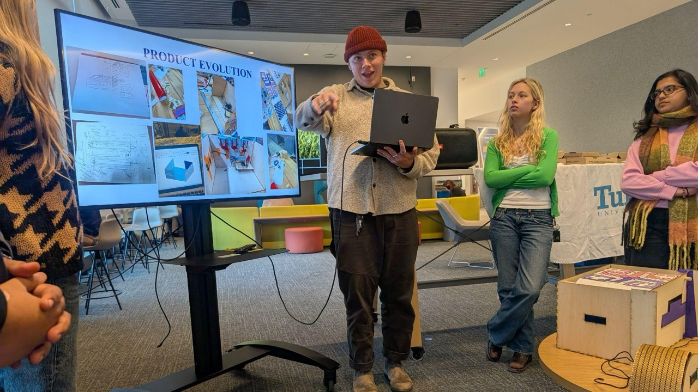
Product evolutionIterate from cardboard mockups to a finished prototype.
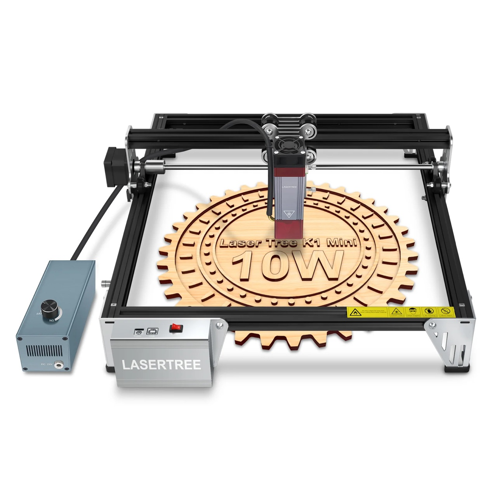
Laser cuttingTurn 2D designs into precise, structural parts.
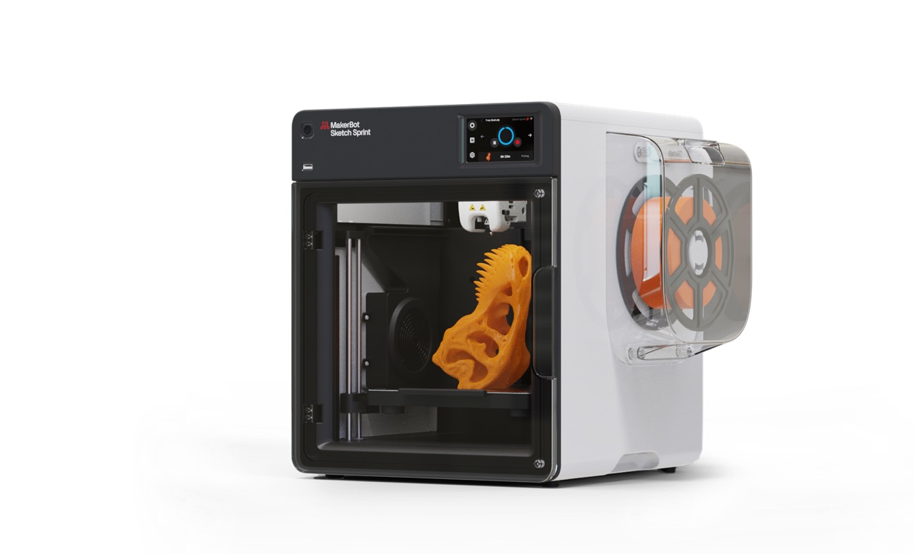
3D printingModel and print custom mounts, brackets, and parts.
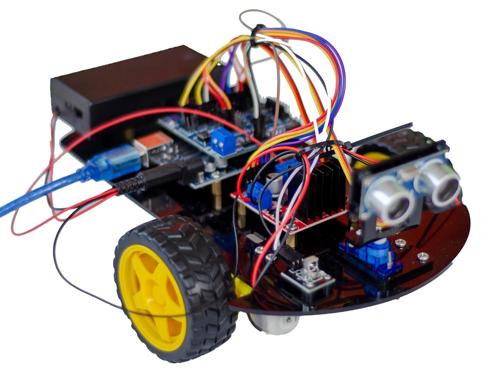
RobotsWire motors and sensors, then program the behavior.
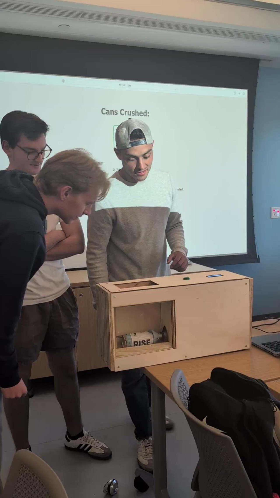
Student projectsBuild, test, and learn as a team — every week.
Your instructor team
Someone to ask when you're stuck — in class, at office hours, or by email.
Thomas Van de Velde
Instructor
Thomas is a technology executive and educator with 20+ years leading digital transformations. At Accenture he built digital engineering teams for retailers like Best Buy; at Amazon he led global AI-driven operations and co-founded Amazon Fresh stores and Amazon Locker. Today he is the founder of TeachPilot and lectures in Entrepreneurship & AI Innovation at Tufts, focused on democratizing engineering education through AI-powered, project-based learning.
The instructor's path — an idea, a prototype, and a decade of building. Yours starts this semester.
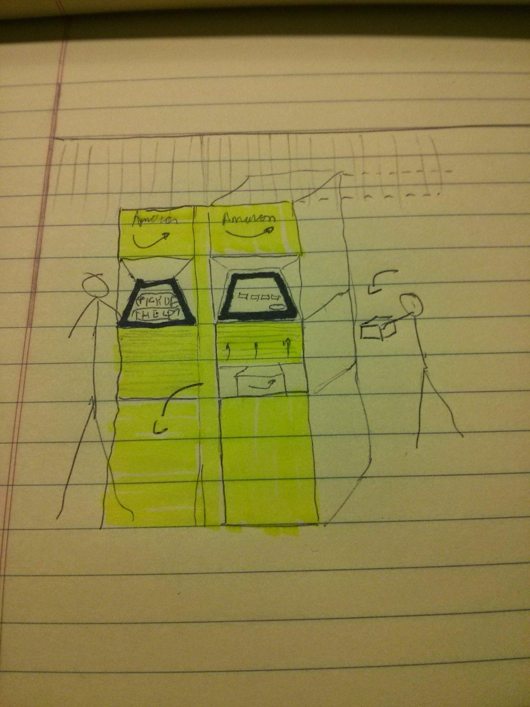
The idea starts as a sketch
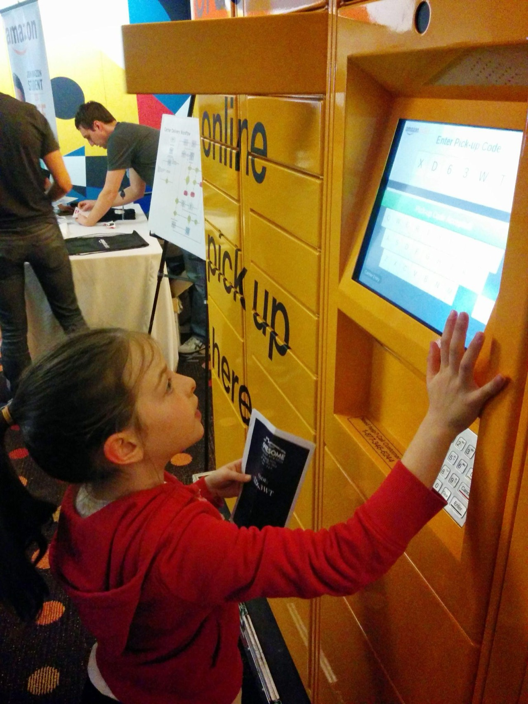
The first prototype in use
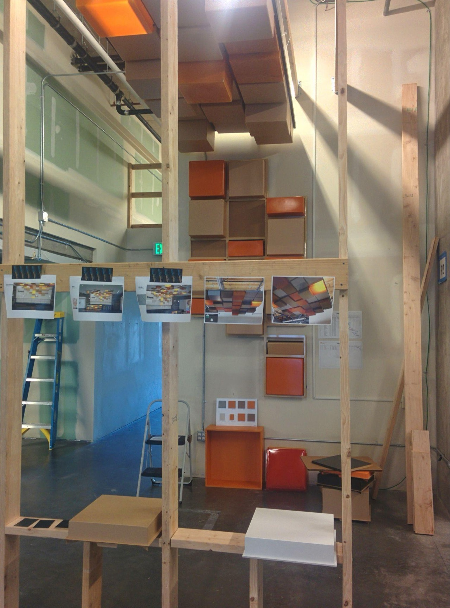
Building the real thing
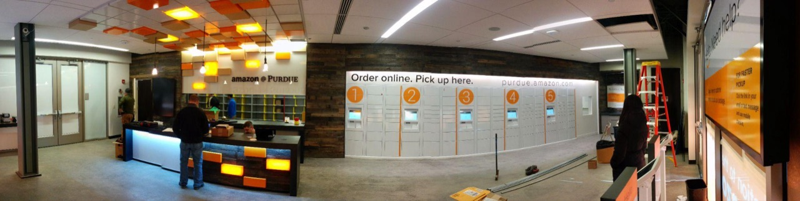
First launch: Amazon @ Purdue
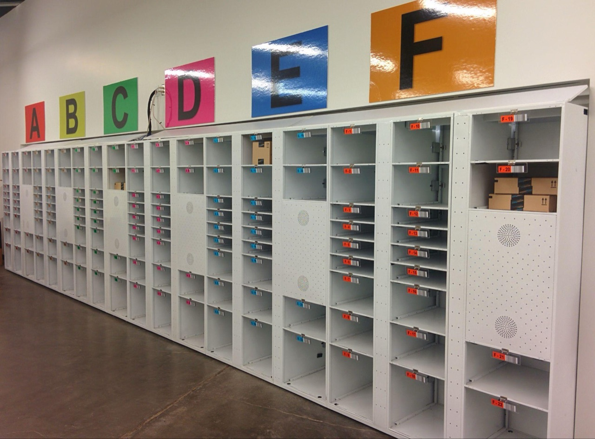
Scaling to thousands of lockers
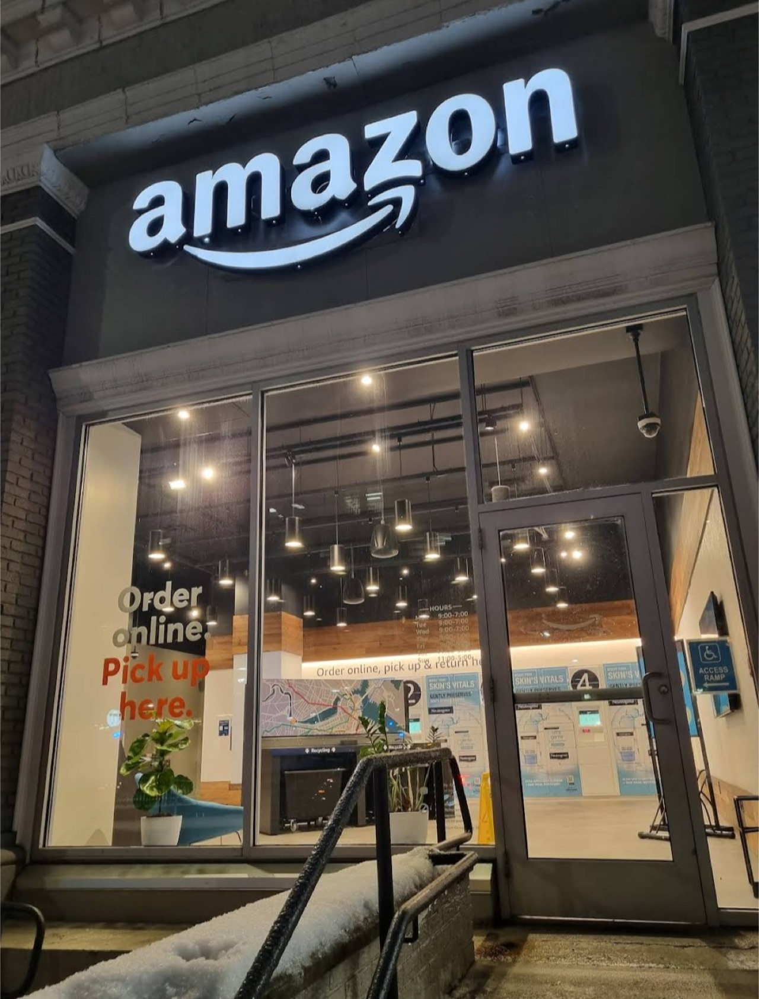
From prototype to storefront
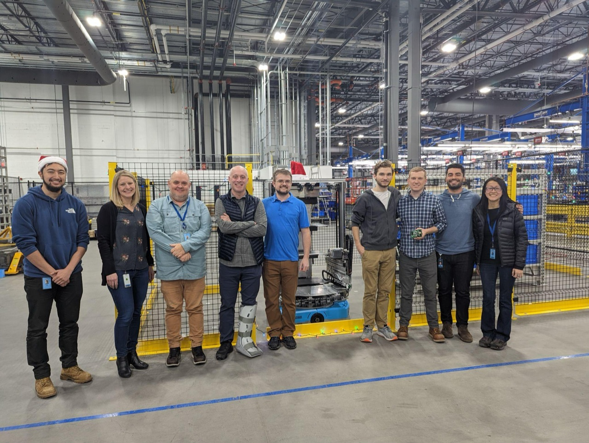
The teams behind the build
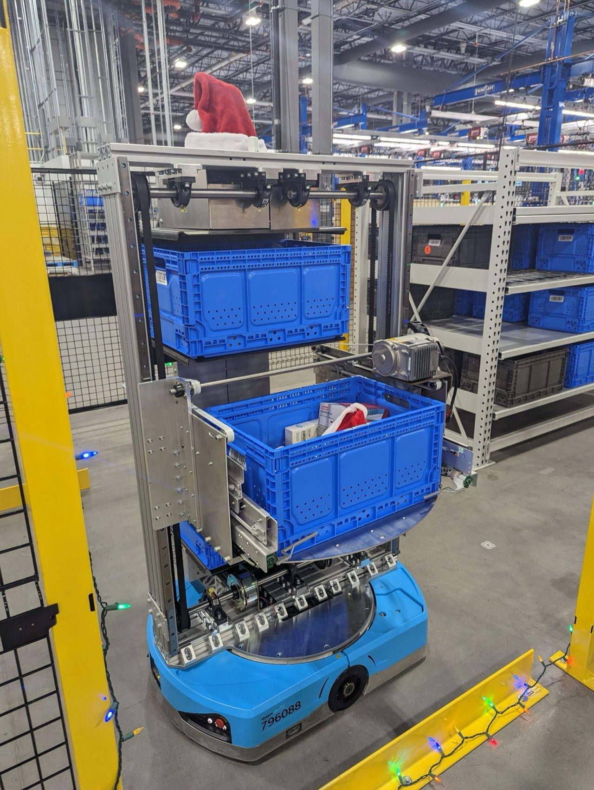
Robotics at warehouse scale
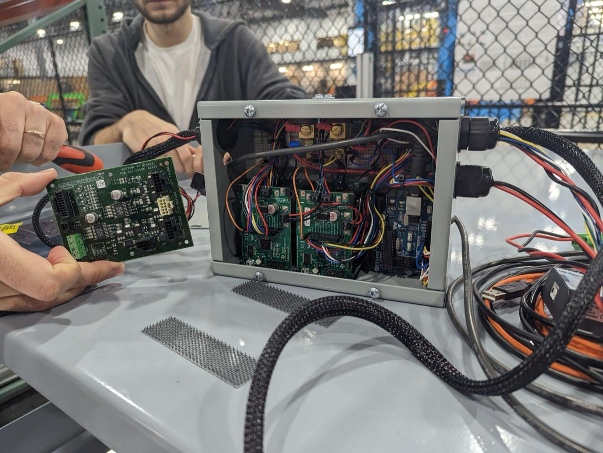
Boards, sensors, and wiring
How class works
Most weeks follow the same rhythm: learn in the classroom, then build at Nolop.
Part 1
60–90 minutes
In the classroom
Last class recap
Foundational maker skills
Short exercises
Break
10–15 minutes
Walk to Nolop
Grab a snack
Head to the makerspace together
Part 2
60–90 minutes
In the makerspace
Apply maker skills
Team project work
Assignments. Individual assignments are small things you make on your own. Team assignments are the Robot Challenge in the first half of the semester and the Final Project in the second half.
Attendance & participation
Expectations
Actively participate in class activities and teamwork
Email me before class if you have a valid reason for missing
Inform your teammates if you can't make a team meeting
Team participation is evaluated via peer reviews
Key messages
This class simulates a real-world work environment
Don't hesitate to ask for help if you fall behind
Teamwork can be challenging — you're here to learn how to work effectively as a team
Course outline
We start with the foundations, then apply them to your team's projects.
AI integrationWireless communicationCloud servicesVisualizationsApp integrationAnd more…
IdeateWeeks 1–4
→
Robot Challengemid-semester
→
Test, iterate, refineWeeks 9–12
→
Demo!end of semester
Grading
How your grade adds up.
Individual assignments35%
Team assignments Robot Challenge and final project35%
Peer evaluations mid-term and final20%
Reflections and participation10%
Team grades are shared by default, but may be adjusted based on individual performance.
Milestone reflections
Reflection is the engine of learning in project-based work.
What is it? A structured pause to examine your work, decisions, and learning process — turning experience into insight. Why it matters: without reflection, we repeat mistakes and miss growth opportunities.
1
Experience
Do the work
2
Reflect
Analyze what happened
3
Conceptualize
Extract insights
4
Apply
Improve next iteration
You'll do this five times this semester, at the milestones that close out each phase of the course: after 3D printing (Week 4), after connectivity (Week 6), after the Robo Challenge (Week 8), at the mid-point of the final project (Week 11), and a final reflection on the whole course (Week 13).
Key reflection questions
What worked well and why?
What would I do differently?
What did I learn about myself?
Tools & resources
And more tools will be introduced throughout the course.
OnShape
Web-based 2D and 3D design tool for CAD modeling.
PrusaSlicer
3D slicer software that prepares your models for printing.
Thonny
Development environment for MicroPython on your devices.
AI tools
Used for software development on devices — a core maker skill in this class.
Your maker kit
Everything you need to start building — yours to keep for the semester.
Microcontrollers
The brain of every project you'll build this semester.
Sensors
Light, distance, motion, and more — to sense the world.
Wires & breadboards
Connect components and prototype circuits quickly.
Components
Motors, LEDs, buttons, resistors — and a ton more…
Nolop makerspace
A makerspace open to everyone at Tufts University — laser cutters, 3D printers, electronics benches, and hands-on help.
Find it online:nolop.org — plus, we walk over together every class.
From the class
Photos from class sessions — the makerspace, first builds, and critiques.
In the makerspaceTables, tools, and teams.
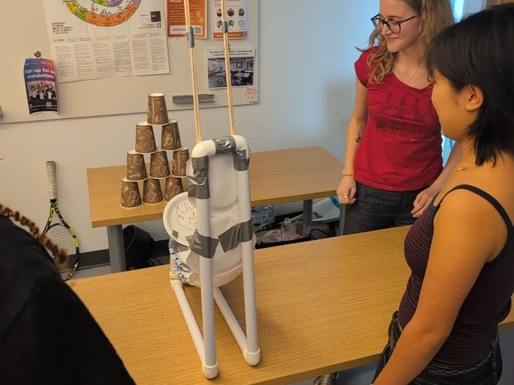
CritiqueFeedback while the idea can still change.
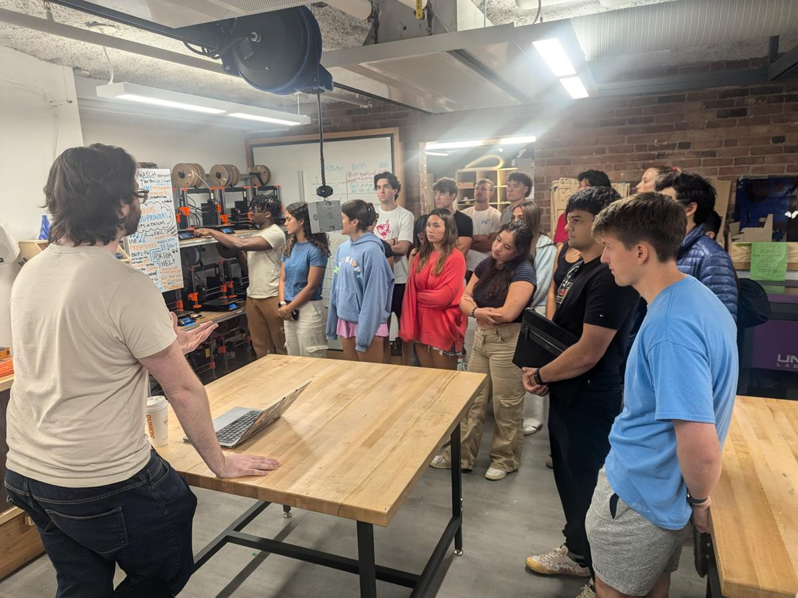
WalkthroughsWhy a build works, and what to try next.
Next week: Ideation and Prototyping — we form teams and kick off the Robot Challenge. See the full schedule in the syllabus.